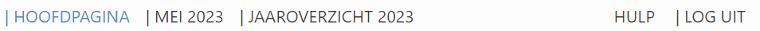
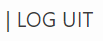

Hulp pagina
Welkom bij de gebruikershandleiding voor het IC Bedbezetting Dashboard prototype. Deze handleiding helpt u om effectief door het dashboard te navigeren en optimaal gebruik te maken van de beschikbare gegevens en grafieken. Hier vindt u gedetailleerde uitleg over de verschillende functies van het dashboard, inclusief hoe u kunt navigeren en hoe u interactie kunt hebben met de grafieken.
Navigatie-instructies
De navigatiebalk vindt u bovenaan het scherm. Hier kunt u navigeren tussen de verschillende tabbladen. Zo kunt u bijvoorbeeld het jaaroverzicht 2023 inzien door op het betreffende tabblad te klikken. Het tabblad dat u momenteel bekijkt, is altijd blauw gekleurd, terwijl de overige beschikbare tabbladen zwart zijn.
Uitloggen
Uitloggen kunt u doen door de log uit knop rechts boven in het scherm te klikken. Zo ziet deze knop eruit:
Als u op deze knop klikt, krijgt u nog een melding, of u zeker weet dat u wilt uitloggen.
Interactie met de grafieken
Filteren op gegevens
Als u geïnteresseerd bent in specifieke data van een grafiek kunt u de zichtbaarheid van de verschillende gegevens aanpassen.

In deze grafiek worden drie verschillende opnametypes weergegeven, samen met lijngrafieken die het gemiddelde aantal opnames (per opnametype) van de voorgaande jaren tonen. Standaard wordt slechts één gegevenssoort zichtbaar getoond, terwijl de overige gegevens doorgestreept worden weergegeven in de legenda. Als u naast het aantal medische opnames, die al wordt weergegeven in de grafiek, ook de grafiek van het aantal spoed opnames wilt zien. Dan kunt u deze gegevens filteren door op deze gegevens te klikken.
De doorgestreepte tekst verdwijnt dan en de data worden weergegeven in de grafiek. Andersom werkt dit exact hetzelfde, door opnieuw op de gegevens in de legenda te klikken verdwijnt de bijbehorende data uit de grafiek. Zo ziet de grafiek eruit als u enkel het aantal spoed- en geplande opnames wilt zien:

Aantallen tonen
Als u met uw muis over de grafieken veegt, worden de absolute aantallen getoond van bijvoorbeeld een balkje in een staafgrafiek of een bolletje in een lijngrafiek. Tevens wordt er getoond om welke dag/maand de data gaat. Dit biedt gedetailleerde informatie over de specifieke gegevenspunten binnen de grafiek.

In de eerste afbeelding kunt u zien dat het gemiddelde aantal opnames van voorgaande jaren in de maand juni 26.655 was. In de tweede afbeelding kunt u zien dat het aantal opnames in juni (van 2023, afgelopen jaar) 23.398 was.
Op deze manier kunt u de grafieken aanpassen aan uw specifieke informatiebehoeften, waardoor u gemakkelijker inzicht krijgt in de gegevens die voor u relevant zijn.
Vragen of opmerkingen
Bij overige onduidelijkheden, vragen of opmerkingen kunt u ons mailen op MIKprototypedashboard@hotmail.com.